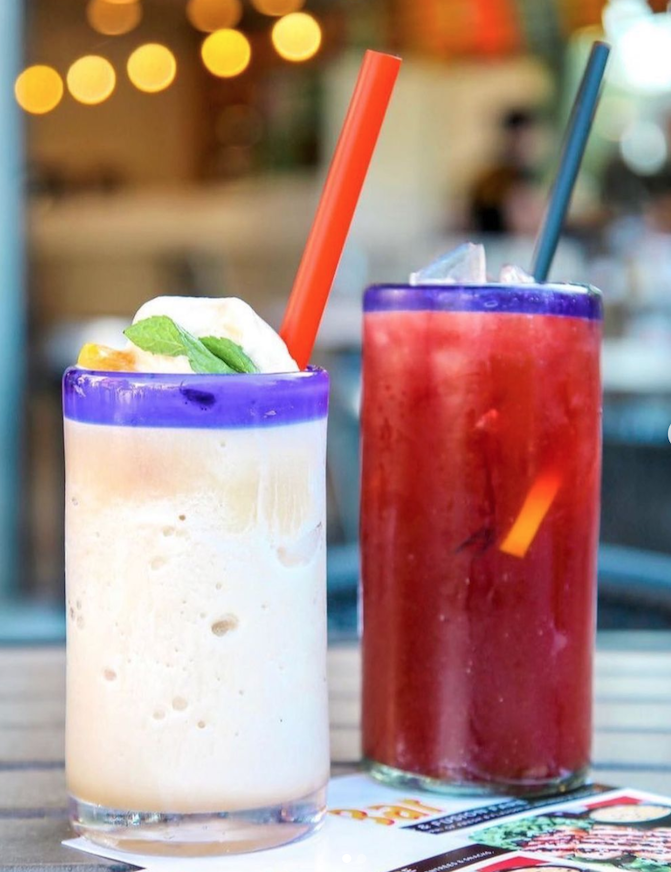
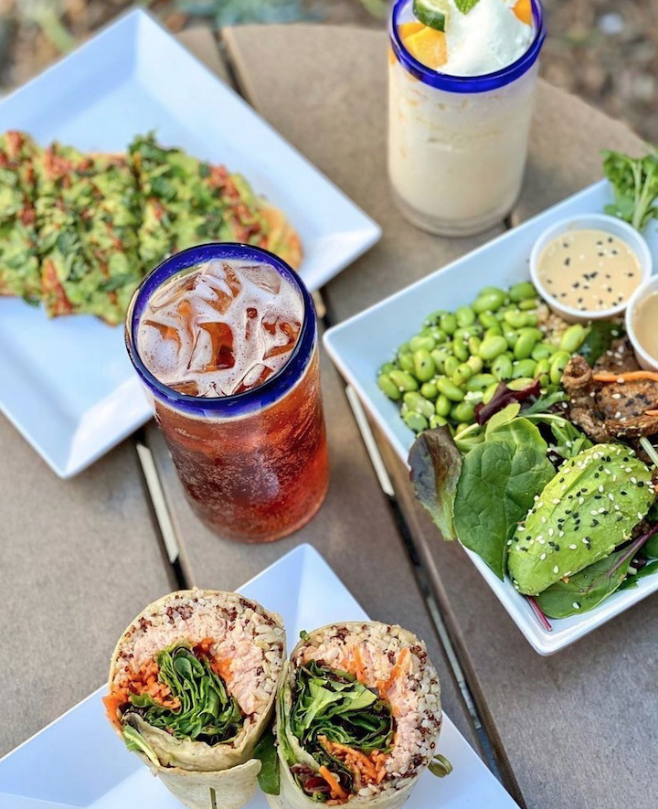
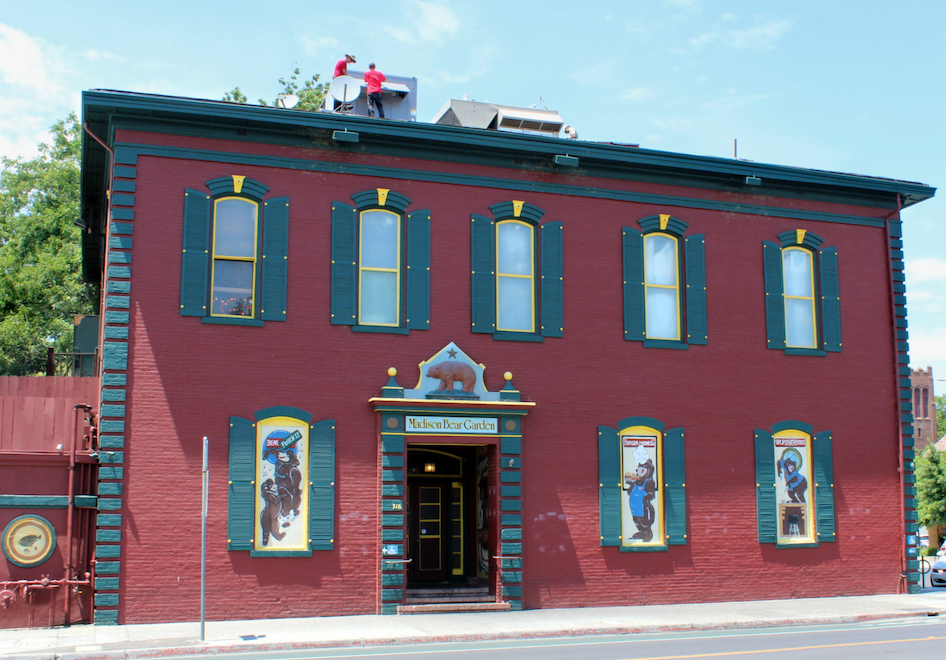
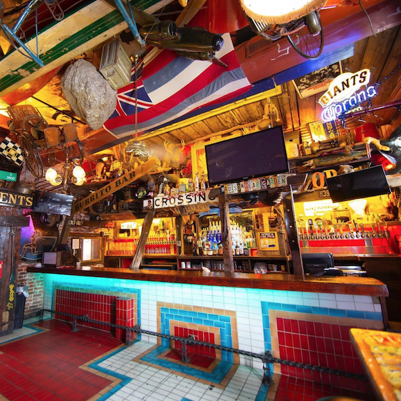
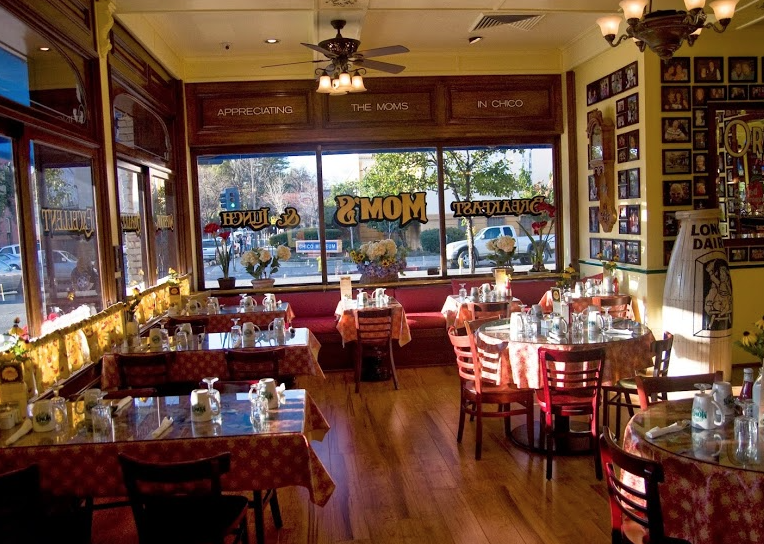
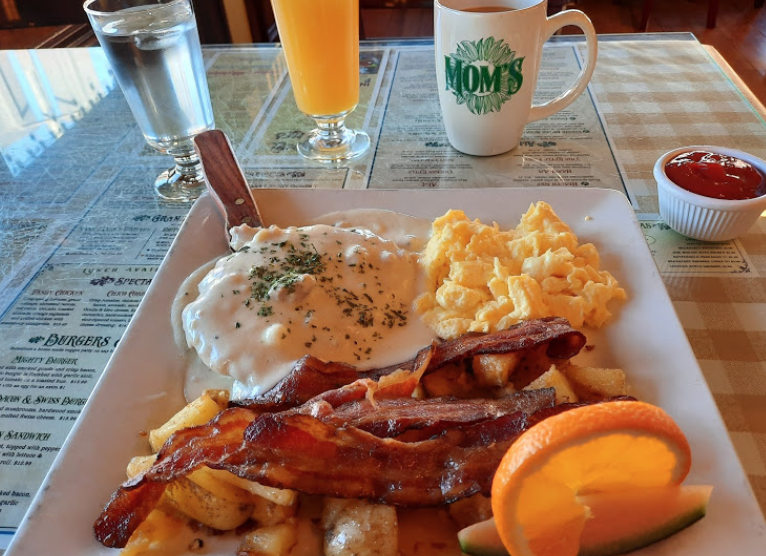
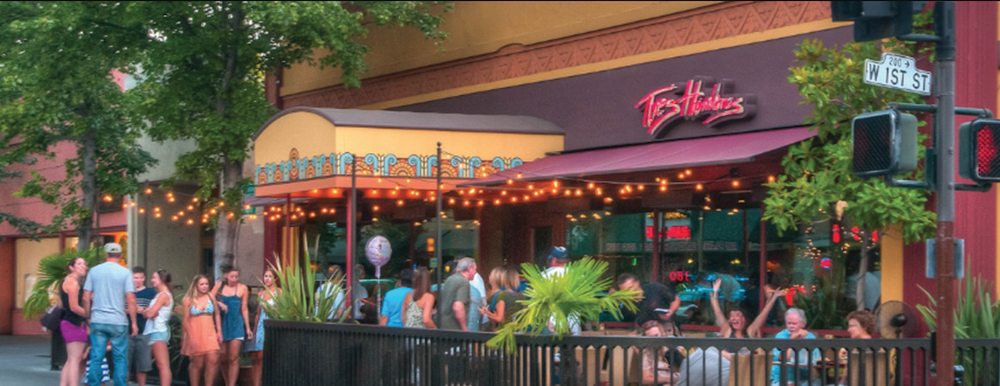
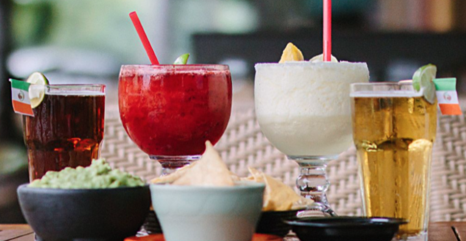
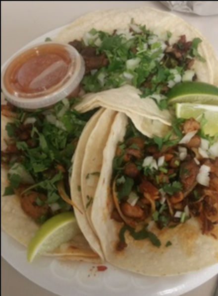
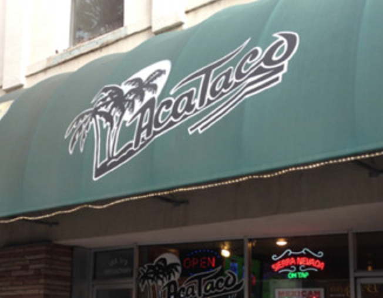

Chico Guide
Mary Kate and Sean have spent a lot of time together in Chico, and have gathered some of their favorite spots for ou to enjoy during your visit.
| Where to Eat | Things to Do |
✨Taste of Chico: Our Favorite Bites✨
Below you'll find our go-to restaurants that we think offer a good mix of either a full dining experience or something quick and convenient. Nearly every businesses listed are conveniently located in downtown Chico. Be sure to also check out our other dining recommendations and recommended bars!
#1: Tea Bar
Tea Bar has a playful and healthy menu, with two convenient locations in Chico. This unique and refreshing restaurant chain got its start in Chico, and in recent years has opened several more locations in Northern California. Their downtown location on Vallombrosa Ave has a beautiful patio if you want to dine in. This is also a great option for take out.
Is Tea Bar for Me?
Is it lunch time? Do you have that ONE vegetarian person you are traveling with, but you still want chicken? Are YOU the vegetarian?!?! *GASP* (It's okay, we still love you). Are you looking for something healthy that you can just grab really quick and bring back to the hotel? Do you want to eat a burrito but need to eat a salad? Do you crave the most elaborate fruity iced teas? Tea Bar is for you.
- MK's & Sean’s Order: The Fusion Wrap with spinach tortilla, chicken, and house-made creamy teriyaki dressing. Sean orders his without cucumber. (Think healthy burrito.)
- MK's Beverage Order: Acai Pomegranate (from the "Sparkle Me" menu)
- Sean's Beverage Order: Tangerine Ginger (from the "Sparkle Me" menu)
#2: Madison Bear Garden
“The Bear” is nothing short of an institution in Chico. It's a classic college bar at night, but very family-friendly during the day. Located right on the edge of campus, the Bear is the best spot to stop for a beer if you are exploring downtown. Their menu features 14 burgers, and they have 59 beers on tap.  
Is The Bear for Me?
Do you want to feel like you have entered the hoarder den of a western pirate who has a flair for art deco? Are you someone who enjoys ice cold beer? Do you like burgers, hotdogs, and deep fried zucchini? Do you understand that not all ranch dressing is created equal? Do you like to sit in booths? The Bear is for you.
- MK's & Sean's Drink Order: Beer Pitcher
- MK's Order: Zooks and Shroom
- Sean's Order: Chicken Wings
P.S. The Bear also has a dance floor upstairs in case any after-partyers don't get enough dancing in at the wedding..
#3: Mom's
Mom’s is the best breakfast spot in town! Their menu has all your classic morning favorites, and a wide selection of brunch beverages. Mom’s is known for it’s cozy bustling atmosphere. If you're coming for breakfast, it's best to get there early as the line starts forming quickly. It is also open for lunch and dinner.
 Is Mom's for Me?
Is it brunch you seek? Do you believe that mimosa’s should come with 3 juice options and the whole bottle of champagne? Do you just want a really good breakfast? Are you curious about apple butter? Do you want a homey atmosphere? Then Mom’s is for you.
- MK's Order: Farmers breakfast with a Bloody Mary
- Sean's Order: Huevos Rancheros Tostada with an Irish Coffee
#4: Tres Hombres
Located in Downtown Chico, this is the place to get a margarita! They also have a full kitchen and happy hour. It's a great place to go if you're with a larger group, and want to hangout and catch up over some Mexican cuisine classics.
Is Tres Hombres for Me?
Do you NEED a margarita? Do you have a weakness for coconut shrimp? Do you just want to sit on a patio while eating guacamole? Do you want to eat dinner with like 10 people? (I’d still call ahead, but they have a quick turn over.) Looking for a place that you can walk to while exploring the heart of downtown? Then Tres Hombres is for you.
- MK's & Sean's Food Order: Coconut Shrimp and Guacamole
- MK's & Sean's Drink Order: Cadillac Margarita
#5: Aca Taco
Aca Taco has two locations in Chico, and their menu is best known for their burritos and tacos. This cash-only restaurant and is a year-after-year winner of the Chico News Review’s Best Burrito in Town! One of their specialties is the "Chico" size burrito which is perfect if you're not super hungry.
 Is Aca Taco for Me?
Want to eat a really good burrito in your hotel room after your travels (or at the end of a long night of celebrating)? Is it taco time? Do you want to stick to a budget? Are you in a hurry? Then Aca Taco is for you.
- MK's Order: Chico (small size) Super Pollo Asado Burrito, NO BEANS!
- Sean's Order: Super Pollo Asado Burrito, PICANTE, with a Mexican coke
More Dining Recommendations
Below you'll find some more favorites of ours that we didn't have time to write about in full-on listacle style. That doesn't mean they're any less good though!
Sierra Nevada Brewing Co
Unfortunately tours aren't available due to COVID, but that shouldn't stop you from grabbing lunch in their dining room for some classic brewery food and plenty of beer taps straight from the source.
Parkside Tap House
A stealth operation of Sierra Nevada located downtown. A great option if you want to sample Sierra Nevada beers without having to go the brewery.
Crush
An upscale restaurant on the second story of a building downtown. Features Californian-style cuisine, great wine, and good lighting.
Celestinos Pizza
A no-frills New York Style pizza joint that sells 'em by the slice. Open late ;)
Burgers & Brew
Great for beer nerds - they have a ton of taps and some can be more unusual compared to other options available in town.
Upper Crust Bakery
An artisan bakery that is great for breakfast items like croissants and scones. Our favorite is their quiches, which come in a few varieties.
Brooklyn Bagel Works
A classic bagel shop. Our favorite is their BLT bagel and vanilla cream cheese. They also have bagel dogs!
Nobby's
If you like your cheeseburgers cheesy, Nobby's is a must. They are known for their famous "cheese skirt." (Closed on Sundays.)
5th Street Steakhouse
If you're looking for a classic steak dinner, this is the place to go.
DUTCH BROS!!!
:A truly amazing phenomenon of the NorCal / PNW area, Dutch Bros is a must for any espresso lover.
Schubert's
An old fashioned candy store with amazing ice cream and milk shakes too. Get their malt shake.
Recommended Bars
Here's our favorite bars we recommend if you find yourself in an after-party mood.
Madison Bear Garden (The Bear)
If you were to only go to one bar in Chico, it would have to be the Bear.
B Street Public House
An awesome well rounded bar with a great patio in the back.
Duffy's
A great dive bar that's open late.
La Salles
A contemporary bar with a lot of space and a fancy interior. Great cocktails.
Crazy Horse Saloon
A country themed bar with a mechanical bull.
Riley's
The "true college bar" with cheap drinks and sticky floors/tables/everything.
Argus
A great place for craft cocktails and a little bit more of an upscale feeling.